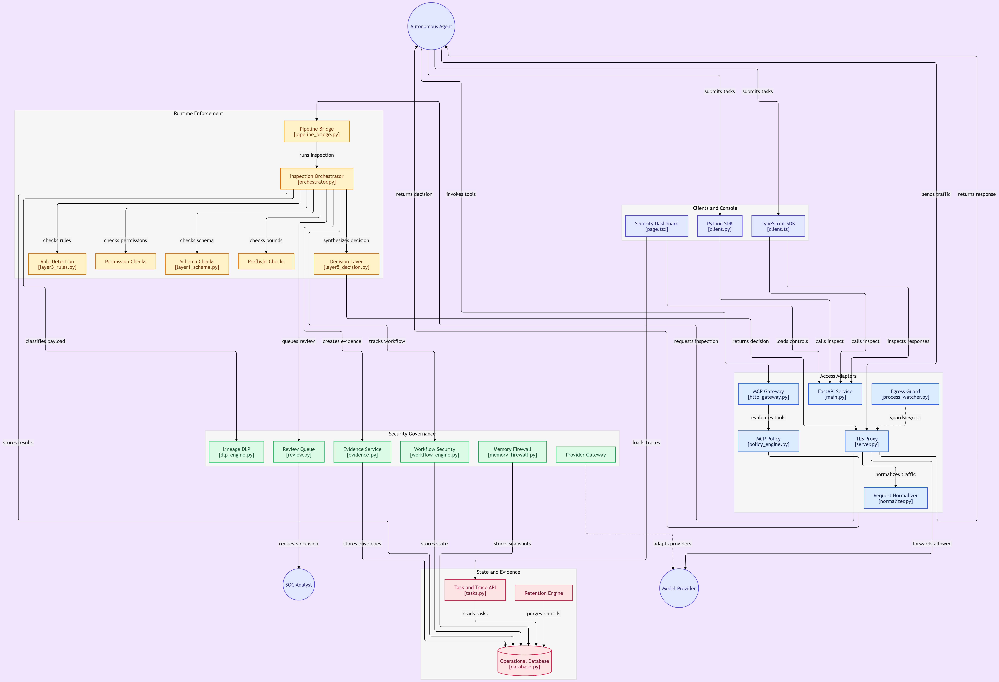

A2A Firewall is a standalone, open-source inter-agent governance mesh — not a feature bolted onto another product. It intercepts, validates, and traces every agent-to-agent message in a multi-agent system, the same way a network firewall inspects host-to-host traffic. This post is the whole project, not a slice of it: the architecture below is the entire scope of what exists today.
Single-agent failure is a known problem with known mitigations — retries, guardrails, human review. Multi-agent failure is different in kind, not just degree, because the failure mode usually isn't any one agent misbehaving. It's agents trusting each other's messages by default, the same way early internal networks trusted anything already inside the perimeter.
That's the problem A2A Firewall is built to answer: treat agent-to-agent traffic the way a real network treats host-to-host traffic — something to inspect, rate-limit, and authorize, not something to assume is safe just because it originated inside the system.

What actually goes wrong in multi-agent setups
In practice, prototyping anything with more than two cooperating agents kept surfacing the same three failure classes:
- Unbounded delegation. Agent A asks Agent B to do something, B asks C, and nobody is tracking whether that chain should ever terminate. Each hop looks reasonable in isolation; the aggregate is a runaway loop.
- Schema drift. An upstream agent changes its output format slightly — a renamed field, a different nesting — and a downstream agent silently misinterprets it instead of failing loudly. The bug doesn't announce itself; it just produces wrong answers that look plausible.
- Permission creep. An agent granted a narrow capability for one task reuses that capability in a context nobody scoped it for, because nothing enforced the boundary at the call site.
None of these are exotic. They're the same category of bug distributed systems have had for decades — unbounded retries, contract breaks, privilege escalation — just wearing a new name because the caller happens to be an LLM instead of a service.
Why a mesh instead of a single chokepoint
The obvious first design is a single gateway all agent traffic passes through. A2A Firewall doesn't do that — it sits as a mesh between agents, applying policy at each hop instead of only at the edge. A single chokepoint gives you one point of failure and one place where policy has to understand every possible interaction pattern in the system. A mesh lets policy be scoped to the specific pair of agents talking, which is where the actual risk lives.
Four mechanisms do the work:
- Rate limiting per agent-pair, not just per system. If Agent A is allowed to call Agent B up to a set threshold, a runaway delegation chain from A can't starve every other pair sharing the system. Global rate limits hide exactly the failure mode you're trying to catch — one bad chain looks the same as normal aggregate load until it's too late.
- Schema verification on every inter-agent message. Every payload gets validated against the receiving agent's expected schema before it reaches that agent's parser. A malformed or drifted message gets rejected at the boundary with a clear reason, instead of silently misparsed three function calls deep where the original cause is already lost.
- A permissions matrix. This scopes not just whether two agents can talk, but about what. Agent A being allowed to ask Agent B for a summary doesn't imply A can ask B to execute a write operation. The matrix is checked on every message, not just at session setup, so a capability granted for one exchange doesn't quietly carry over to the next.
- LLM-backed semantic parsing. This is the harder layer. A message can be perfectly schema-valid and still be outside what an agent's role should ever ask for — a request that's structurally fine but semantically wrong. Catching that requires understanding intent, not just shape, so this layer uses a Groq-hosted model to classify whether a request plausibly belongs to the requesting agent's declared scope before it's allowed through.
Where the semantic layer earns its cost
The rate limiter and schema check are cheap and deterministic — they should catch the majority of problems on their own. The LLM semantic parser is slower and non-deterministic, which means it has to be reserved for the class of failure the first two layers structurally can't see: a request that is valid in form but wrong in intent. Running it on every single message would be wasteful and would introduce its own failure surface — a flaky classifier is a new attack surface, not a fix. In practice it's invoked selectively, on messages that cross a permission boundary the matrix flags as sensitive, rather than on the full firewall traffic.
That's a deliberate trade-off worth stating plainly: the semantic layer adds real latency and a non-zero false-positive/false-negative rate. The honest framing is that it raises the cost of a certain class of attack, not that it eliminates it.
What this doesn't solve
A2A Firewall governs traffic between agents that are already participating in the mesh. It doesn't solve the harder problem of an agent that's compromised at the model level and generates messages that are schema-valid, permission-valid, and semantically plausible for its role — a well-disguised insider, in network terms. That's a different, harder problem, closer to anomaly detection on behavior over time than to message-level inspection. I'd rather say that clearly than let the firewall framing imply more coverage than it has.
Project Links & Resources
This is early — the repo currently has open issues on exactly the kind of edge cases described above, including where the permissions matrix should sit between static and adaptive. If you're building multi-agent systems and have hit similar failure modes, feel free to open an issue on GitHub.